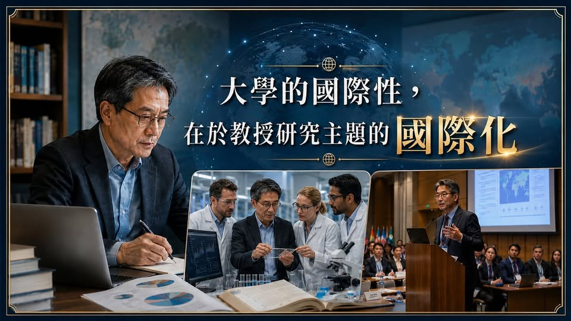

《看懂制度，選對世界》第一集
大學的國際性，是為了什麼？
【 世界頂尖名校，不斷地強調國際性，除了所謂的大學排名之外，還有一個更深層的意義 : QS 世界大學排名方法中，Global Engagement 佔 15%，內含 International Faculty Rat…

【 世界頂尖名校，不斷地強調國際性，除了所謂的大學排名之外，還有一個更深層的意義 : QS 世界大學排名方法中，Global Engagement 佔 15%，內含 International Faculty Ratio、International Research Network、International Student Ratio。THE 世界大學排名也把 International Outlook 納入五大核心面向，評估 staff、students and research。
這代表國際性，已經進入大學競爭的核心。一所大學能不能帶學生接觸世界前沿，關鍵並不只在於有多少國際學生，而在於教授的研究是否持續與全球學術網絡連結。今天的知識更新速度太快，AI、生技、能源、永續、醫療、金融科技、材料科學、國際關係、教育科技，每一個領域都在快速變動。原因很簡單。最新研究並不是只存在於教科書裡，也不是等到論文出版後才開始學習。很多重要的研究方向，往往是在國際研討會、跨國研究計畫、共同指導博士生、國際期刊審稿、產學合作與實驗室交流中逐漸形成。
教授若能長期參與這些國際研究網絡，學生在課堂上接觸到的就不只是既有知識，而是正在發展中的研究問題。這對學生非常重要。所以，當我們評估一所大學的國際性時，不能只看校園裡有多少外國學生，也不能只看學校有沒有交換計畫。大學的國際性，最關鍵的一個核心問題：學生在這裡學到的，是昨天的知識，還是正在走向明天的知識？